| 日付 | 2013年10月13日（日） - 2013年10月14日（月） | ||||
|---|---|---|---|---|---|
| 山域 | 草津周辺 | ||||
| メンバー | 家族（妻、長女・2歳、長男・0歳） | ||||
| 山行形態 | 子連れ1泊2日ホテル泊 | ||||
| アクセス | 車、リフト | ||||
| ルート (Map1) |
|
草津白根山と志賀高原は長野と群馬の県境付近に広がっている。
この辺りには手軽に登れる名峰が数多くあるのだが、
これまで一度も足を踏み入れたことがなかった。
晴天の3連休、安達太良山の紅葉を見に行くか草津に行くか迷ったが、
紅葉の色づき具合がよく分からなかったこともあり、
今回は長年の懸案だった草津に向かうことにする。
1日目
5時半に家を出たのだが、関越でまさかの事故渋滞に巻き込まれる。
草津白根山に続く道路に差し掛かったのが9:30。
標高が高くなり火山らしい風景が広がってくる。
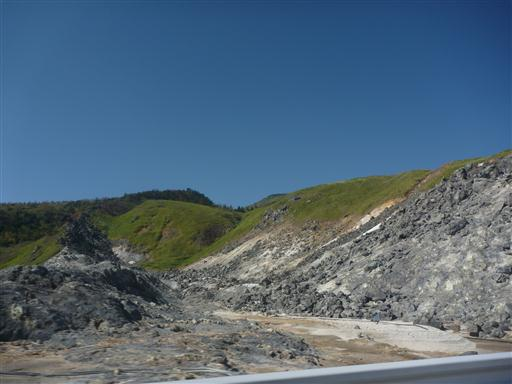
しかし、道半ばで渋滞に巻き込まれてしまう。
本日は日曜日のため、この時間だと前日に宿泊していた観光客の車も多いだろう。
渋滞の原因は道路工事のための片側交互通行だった…
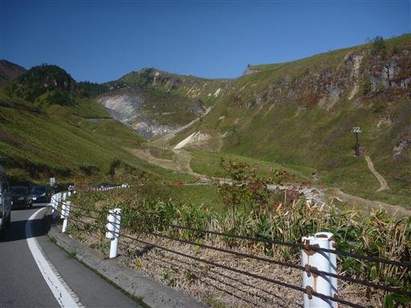
片側交互通行を過ぎてしばらく走ると、目の前に異様な草津白根山の姿が見えてきた。
しかし、ここで湯釜に向かう観光客の車で大渋滞。
1km程度の渋滞なのだが、駐車場がなかなか空かないため全く進まず、30分以上かかってしまう。
関越での事故渋滞があまりにも痛かった。
渋川伊香保ICからの西進ルートより、信州中野ICからの東進ルートを選択するべきであった。
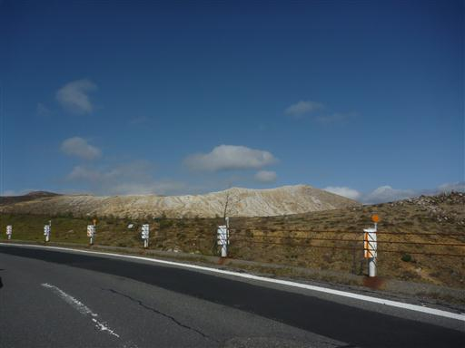
ようやく志賀山の駐車場に到着する。
気温は6度。昨日は異様に暑くて室内の温度計は31度を指していた。
防寒着は持ってきたが、それでもこの気温差は結構辛い。

まずはリフトに乗って少しだけ標高をかせぐ。
今日は風が非常に強いため、ますます体が冷える。
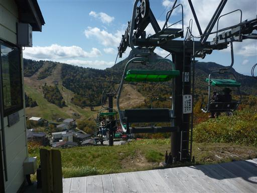
リフトを降りた地点がハイキングコース入口だ。標高1910m。
とにかく寒いので早々に歩き始める。娘は今日は歩こうとせずキャリアに乗っている。
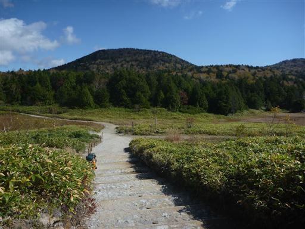
歩き始めてすぐに渋池に到着する。
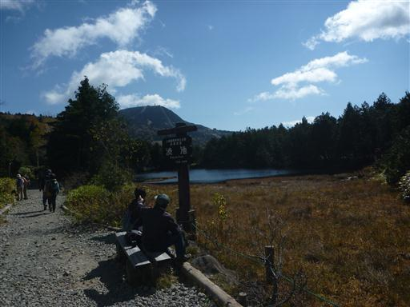
樹林に囲まれた大きめの池で、なかなか美しい。
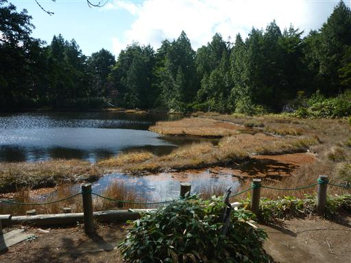
道は幅が広く、傾斜もないため非常に歩きやすい。辺りは思った以上に人の数が多い。
志賀山はそんなに人気の山だったのか、と不思議に思いながら歩いていく。
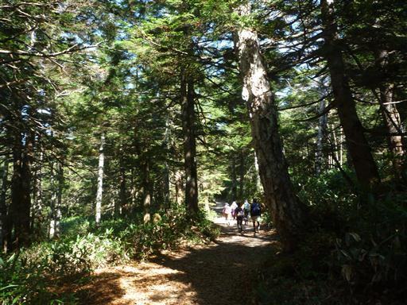
途中で四十八池に向かう道と別れて志賀山に向かう道に入っていく。
途端に人影が見えなくなる。ほとんどの人は四十八池に向かうようだ。
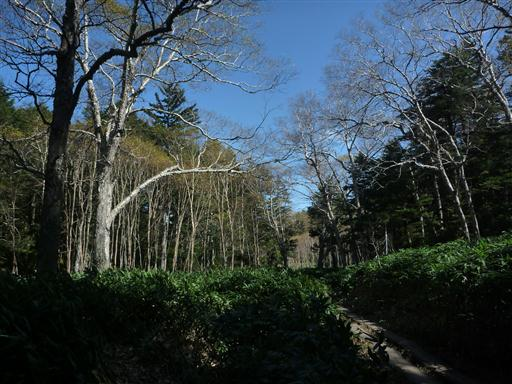
志賀山への登山道は、これまでの平坦な道とは打って変わってかなりの急斜面だ。
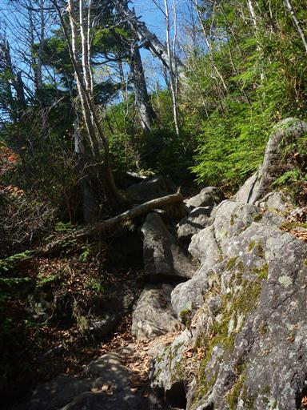
足元にゴゼンタチバナの実がなっている。
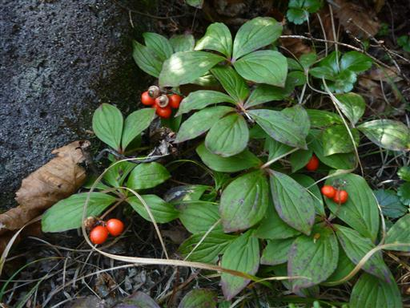
急傾斜の道は延々と続く。娘を歩かせるのは少し無理そうだ。

視界が開けて、目の前に山頂部が見えてきた。
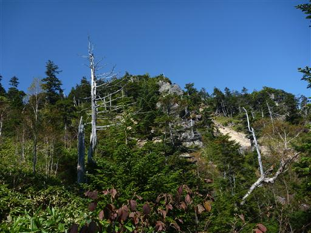
ここからは比較的展望の良い道を登っていく。
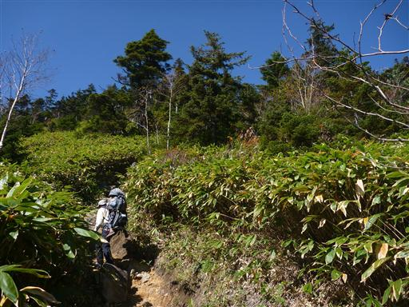
眼下にはお釜池が見える。小さな丸い池だ。
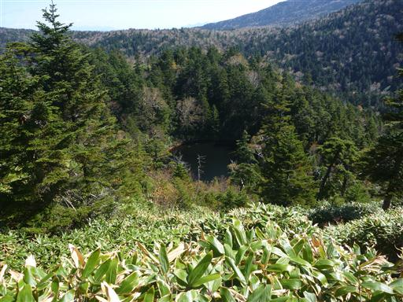
志賀山山頂に到着する。標高2037m。
狭い山頂は団体登山客に占拠されていたが、彼女らが去った後に
風が避けられるスペースに腰を下ろして昼食をとる。
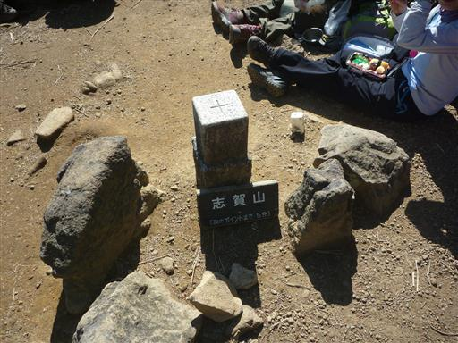
さほど展望の良い山頂ではないが、いくらかの展望が望める。
周りには志賀高原の山々が広がっている。
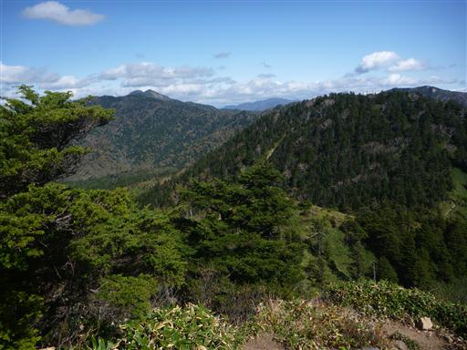
昼食をとったら出発し、目の前に見える裏志賀山に向かう。
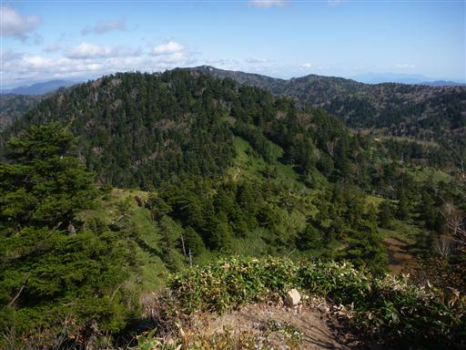
素晴らしい展望の広がる道を下って行く。
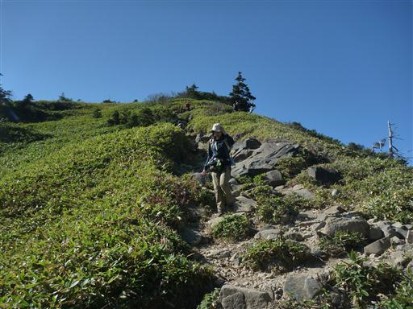
眼下に鬼の相撲場の池が見えてくる。池の周りが不思議な色をしている。
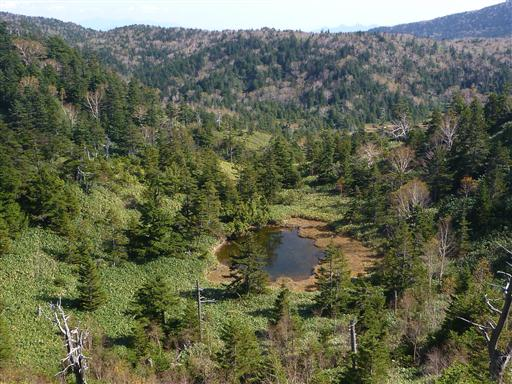
こちらは志賀ノ小池。少し大きめの池だ。このコースは色々な池が眺められる。

遠くに四十八池が見えてくる。ここは小さな湿原になっている。
今から裏志賀山を経由してそこに下る予定だ。
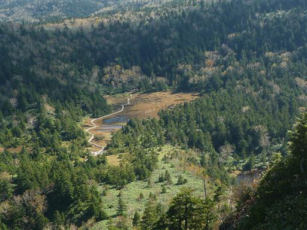
背景は横手山。不格好な山だが志賀高原では裏岩菅山に次ぐ標高を持つ高峰だ。
横手山は山頂までリフトで登ることができる。
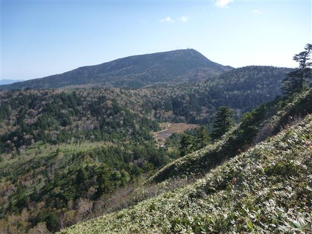
四十八池に向かう道から少しそれた場所に裏志賀山の山頂はある。
山頂には小祠があるだけで展望は全くない。

山頂から少し進んだ先から大沼池を見下ろすことができる。
観光写真でもたびたび見られる志賀高原を代表する池だ。
非常に美しい池のはずなのだが、本日は水の色があまりきれいでない。
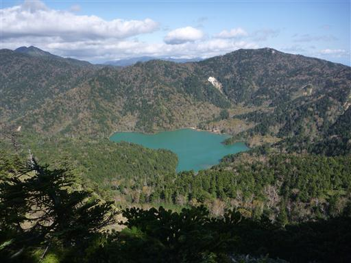
四十八池の畔に下りてくる。こちらの登山道入口には鳥居が立っている。
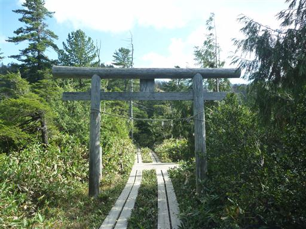
湿原に木道が伸びている。歩きやすそうな道になったので娘を下ろして歩かせたのだが、
板と板の間の小さな隙間が気になるようで、かなり歩きにくそうだ。
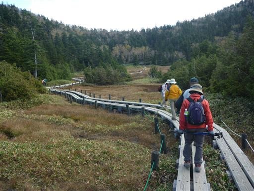
湿原の背後に裏志賀山を望む。
この季節だと湿原の花は咲いていないが、なかなか美しい景色が広がる。
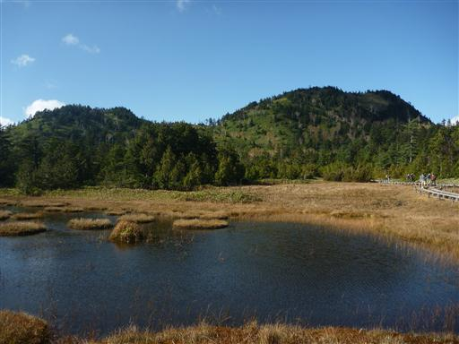
ここからはリフト乗り場まで、平坦な広い道を歩いていく。
歩きやすい道なのだが、娘は歩くのが嫌なようでキャリアに乗せる。
本日はほとんど歩かなかった。車の移動に5時間半もかかったので疲れたのだろうか…
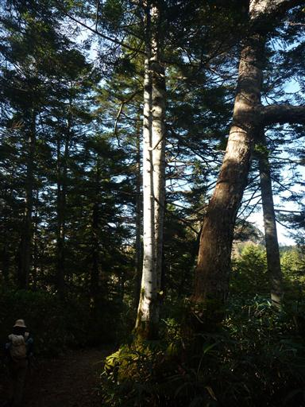
あまり見るべきものの無い道なのだが、一本立派な木が立っていた。
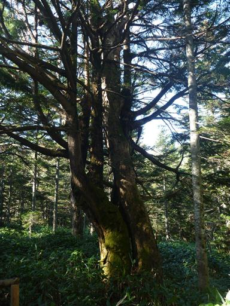
樹林帯を抜け視界が広がるとリフト乗り場だ。
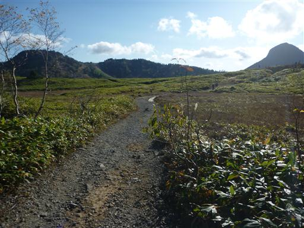
リフトに乗って下山する。背後に見えるのは笠ヶ岳だ。
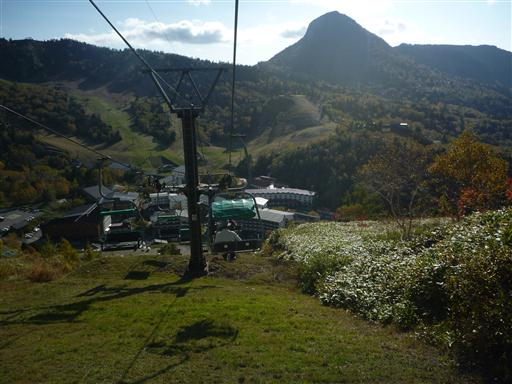
下山後、余裕があれば横手山に行こうと考えていたが、
時間的に無理そうなので、代わりに澗満滝を見に行くことにする。
落差107mの立派な滝なのだが、いかんせん展望台から遠すぎる。
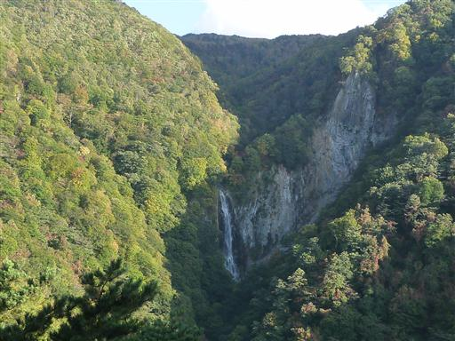
展望台の近くに炭焼小屋がある。実際にここで炭をつくっているようだ。
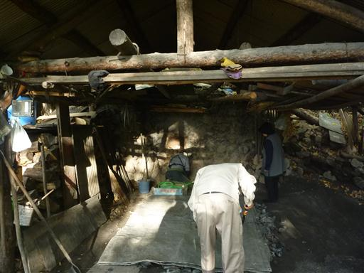
観光を終えたら本日の宿、アルペン・グローに移動する。
スキー場にある宿で、今はオフシーズンのため安く泊まることができる。
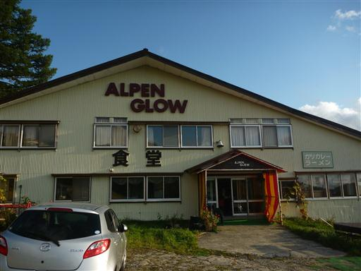
夕方、外に出てみると正面に北アルプスのシルエットが見えている。
正面が鹿島槍ヶ岳だ。夜中に外に出てみると満天の星空だった。
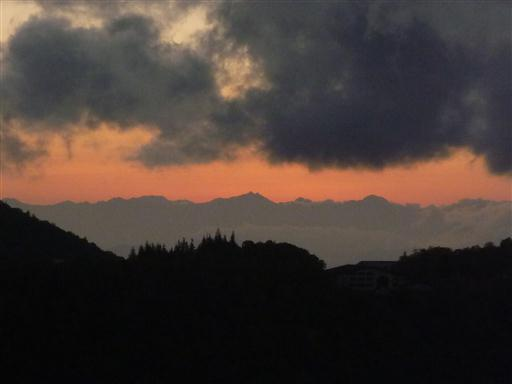